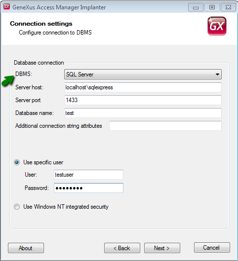

GAM Deploy Tool: Creating the connection.gam file
One purpose of the GAM Deploy Tool is to create the connection.gam file (needed to connect to the GAM Repositories).
Each GAM Repository may have n GAM Repository Connections, which are defined for each Repository in the GAM database.
The connection.gam file includes the key associated with each Repository you want to connect to. The connection information associated with the key has to exist in the GAM database (it should have been previously created using the GAM API).
So, by using GAMDeployTool, the entries in the SysConnectionConfig table (in the GAM database) are added depending on the selection of the user (who can select among the existing GAM Repository Connections of each Repository).
The tool is for use of administrators of GAM Manager Repository (for example: gamadmin user).
How to execute GAMDeployTool in standalone mode:
1. Execute GamDeployTool.exe.
2. Select the operation you want to perform; in this case, "Generate Connection File".
Figure 1.
3. Enter the necessary data to connect to the GAM database.
By now, the tool uses ADO to connect to the database, so you need the corresponding ADO client of the DBMS you want to connect to.

Figure 2.
4. Enter your administrator credentials (administrators of GAM Manager Repository).
The only users who are allowed to execute this tool are the administrators of GAM Manager Repository (for example, "gamadmin" user). If you try to connect with another user, an error will be thrown: "GAM: Unknown user".

Figure 3.
5. In the following window, you will view all the Repositories found in the GAM database, and the available connections for each of them.
In this step, you are asked to select the path where connection.gam will be generated and the connections that will be included in the GAM database.
You are shown a tree structure with parents and their children, where each parent is the Repository, and its children are all the available GAM Repository Connections of the Repository (existing in the database).
The user can select the "GAM Repository Connections" that are going to be included in the SysConnectionConfig table in the GAM database.

Figure 4.
6. Final Step: the file is generated in the specified location.
Figure 5.
Finally, the connection.gam obtained has to be copied to the web application. For NET applications, copy it to the virtual directory; for JAVA, copy it to the root of the webapp in the servlets server.
Note: This tool can be launched from the GeneXus IDE, by selecting GAM - Update Connection File option.